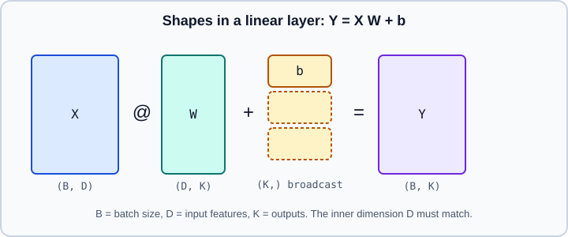

Math for ML: Linear Algebra, Calculus & Probability
|
This content was generated with the assistance of AI and should be verified against the official documentation before being relied on in production. |
Machine learning needs less mathematics than its textbooks suggest, but it needs the same few ideas over and over: data as arrays with shapes, models as functions that multiply those arrays, learning as following a gradient, and uncertainty as probability. This page is a practical tour of exactly those ideas, written so that every formula has a line of code next to it and every line of code has a shape you can check.
Examples target Python 3.13 with NumPy 2, PyTorch 2.15 and TensorFlow 2.21 (Keras 3.15), and the page was checked on 2026-10-30. Examples were run on Python 3.13 with NumPy 2, PyTorch 2.15 (CPU) and TensorFlow 2.21 on 2026-11-01, and the outputs shown are from that run. The next pages build directly on this one: Loss Functions & Information Theory and Gradient Descent & Optimization. If the notation here feels rusty, NumPy linear algebra and Statistics Fundamentals cover the same ground from the data-analysis side, and What Is Machine Learning? places it in context.
Scalars, vectors, matrices and tensors
Everything in machine learning is stored in arrays, and the only property that matters before the numbers is the shape.
| Object | Shape | Typical meaning |
|---|---|---|
Scalar |
|
A loss value, a learning rate, a probability. |
Vector |
|
One example with D features, a bias, an embedding, a gradient of D parameters. |
Matrix |
|
A dataset of N examples, or the weights of a layer mapping D inputs to K outputs. |
Tensor (rank 3) |
|
A batch of B sequences, each with T steps of D features. |
Tensor (rank 4) |
|
A batch of images: channels first (PyTorch default) or channels last (Keras default). |
Two conventions cause most shape bugs. First, the first axis is the batch axis: a model receives many examples at once, and a single example must be given a leading axis of size one. Second, libraries disagree on whether a row or a column vector is the default, so write shapes down in comments until you are fluent.
A linear layer is the workhorse of the whole field. For a batch \(X\) of shape \((B, D)\), a weight matrix \(W\) of shape \((D, K)\) and a bias \(b\) of shape \((K,)\):
\[Y = XW + b, \qquad Y \in \mathbb{R}^{B \times K}\]
The inner dimensions must agree (D with D), the bias is broadcast across the batch, and the result has the outer dimensions. PyTorch’s nn.Linear stores the transposed weight (shape (K, D)) and computes x @ weight.T + bias, which is a frequent source of confusion when you compare a hand-written layer with the library one.

import numpy as np
rng = np.random.default_rng(0)
X = rng.normal(size=(4, 3)) # 4 examples, 3 features
W = rng.normal(size=(3, 2)) # 3 inputs -> 2 outputs
b = np.array([0.5, -0.5]) # one bias per output
Y = X @ W + b # (4, 3) @ (3, 2) -> (4, 2); b is broadcast
print(X.shape, W.shape, Y.shape)
x_single = X[0] # shape (3,): one example without a batch axis
y_single = x_single[None, :] @ W + b # add a batch axis of size 1
print(x_single.shape, y_single.shape)Output:
(4, 3) (3, 2) (4, 2) (3,) (1, 2)
Source: NumPy: Broadcasting and numpy.matmul. The broadcasting rules are explained in detail in Broadcasting.
Operations you will use every day
-
Dot product \(a \cdot b = \sum_i a_i b_i\) measures alignment. It is the building block of matrix multiplication, of attention scores and of cosine similarity.
-
Matrix product
A @ Bcombines rows of A with columns of B. It is not commutative, but it is associative, so the order of evaluation can change the cost (never the result) of a chain of products. -
Element-wise (Hadamard) product
A * Bmultiplies matching entries and is what gates, masks and dropout use. Mixing it up with@is an easy bug because both run without error when the shapes allow it. -
Transpose swaps axes. For tensors, name the axes you swap:
x.transpose(1, 2)ortorch.permute. -
Reductions (
sum,mean,max,argmax) remove axes. Always state which axis you reduce and whether you keep it (keepdims=Truein NumPy,keepdim=Truein PyTorch) so that the result still broadcasts against the original. -
Einstein summation (
np.einsum,torch.einsum,tf.einsum) writes any combination of the above as an index expression, for exampleeinsum("bd,dk->bk", X, W). It is the clearest notation for attention and other multi-axis products.
Norms and distances
A norm measures the size of a vector. The p-norm of a vector \(x\) is:
\[\lVert x \rVert_p = \left( \sum_i \lvert x_i \rvert^p \right)^{1/p}\]
| Norm | Formula | Where it appears |
|---|---|---|
L1 |
\(\sum_i \lvert x_i \rvert\) |
Lasso regularisation (encourages exact zeros), MAE loss, robust distances. |
L2 (Euclidean) |
\(\sqrt{\sum_i x_i^2}\) |
Ridge regularisation and weight decay, MSE loss, gradient clipping, nearest-neighbour distance. |
L-infinity |
\(\max_i \lvert x_i \rvert\) |
Adversarial perturbation budgets, largest-error checks. |
Frobenius (matrices) |
\(\sqrt{\sum_{ij} A_{ij}^2}\) |
The L2 norm of a matrix viewed as a long vector; low-rank approximation error. |
Features on very different scales distort distances and gradients, which is why scaling matters (see Scaling & Transforming and, for the effect on optimisation, Gradient Descent & Optimization). Cosine similarity ignores length and compares only direction: \(\cos\theta = \dfrac{a \cdot b}{\lVert a \rVert_2 \lVert b \rVert_2}\). Embedding search normally uses it; see Embeddings for the retrieval side.
Eigenvalues, SVD and low-rank structure
A matrix acts on space by stretching and rotating it. The singular value decomposition (SVD) makes that explicit for any matrix \(A\) of shape \((m, n)\):
\[A = U \Sigma V^{\top}\]
Here \(U\) and \(V\) have orthonormal columns (rotations or reflections) and \(\Sigma\) is diagonal with non-negative singular values \(\sigma_1 \ge \sigma_2 \ge \dots\) (the amount of stretching along each direction). Three consequences make it the most useful single idea in applied linear algebra:
-
Best low-rank approximation. Keeping only the k largest singular values gives the closest rank-k matrix in the Frobenius norm (the Eckart-Young theorem). This is the idea behind PCA, latent semantic analysis, recommender-system factorisation and LoRA-style adapters.
-
Conditioning. The ratio \(\sigma_{\max} / \sigma_{\min}\) is the condition number. A large ratio means the problem is stretched in one direction and squashed in another, which makes least squares numerically fragile and gradient descent slow.
-
Eigenvalues. For a symmetric matrix such as a covariance matrix or a Hessian, the eigenvalues are the stretching factors along orthogonal axes and tell you the curvature in each direction. PCA is the eigendecomposition of the covariance matrix, and it is computed in practice through the SVD of the centred data.
import numpy as np
rng = np.random.default_rng(0)
A = rng.normal(size=(6, 4))
U, s, Vt = np.linalg.svd(A, full_matrices=False)
print(U.shape, s.shape, Vt.shape) # (6, 4) (4,) (4, 4)
# Best rank-1 approximation and its Frobenius error
A1 = s[0] * np.outer(U[:, 0], Vt[0])
error = np.linalg.norm(A - A1) # Frobenius norm by default
print(round(error, 4), round(np.sqrt((s[1:] ** 2).sum()), 4)) # identical
print("condition number:", round(s[0] / s[-1], 2))Output:
(6, 4) (4,) (4, 4) 2.8953 2.8953 condition number: 3.39
The two error values agree because the approximation error is exactly the square root of the sum of the discarded squared singular values.
Source: numpy.linalg.svd and scikit-learn: PCA. The data-analysis side is covered in Decomposition.
Solving least squares
Fitting a linear model with squared error is a linear algebra problem: find \(w\) minimising \(\lVert Xw - y \rVert_2^2\). Setting the gradient to zero gives the normal equations \(X^{\top}X\,w = X^{\top}y\). Two practical rules apply. Do not form an explicit inverse (np.linalg.inv); solve the system instead. And prefer np.linalg.lstsq (SVD-based) when the columns of \(X\) can be nearly collinear, because forming \(X^{\top}X\) squares the condition number. The full comparison with iterative methods is in Gradient Descent & Optimization.
Calculus: derivatives, gradients and the chain rule
Learning is the repeated answer to one question: if I nudge each parameter slightly, how does the loss change? For one parameter that is the derivative \(\dfrac{df}{dx}\); for many it is the gradient, the vector of partial derivatives:
\[\nabla_w L = \left( \frac{\partial L}{\partial w_1}, \dots, \frac{\partial L}{\partial w_D} \right)\]
The gradient points in the direction of steepest increase of \(L\), so stepping against it reduces the loss. Its length is the local slope. That is all gradient descent is; the details are in Gradient Descent & Optimization.
The chain rule
A neural network is a composition of simple functions, and the chain rule gives the derivative of a composition. For \(L = f(g(h(x)))\):
\[\frac{dL}{dx} = \frac{dL}{df}\,\frac{df}{dg}\,\frac{dg}{dh}\,\frac{dh}{dx}\]
For vector-valued functions the factors become matrices of partial derivatives, the Jacobians. If \(g : \mathbb{R}^n \to \mathbb{R}^m\) then its Jacobian \(J\) has shape ((m, n)\) with entries \(J_{ij} = \partial g_i / \partial x_j\), and for a scalar loss \(L(g(x))\):
\[\nabla_x L = J^{\top} \, \nabla_g L\]
Backpropagation is this formula applied layer by layer from the loss backwards, never building the full Jacobians but only multiplying a vector by \(J^{\top}\) (a vector-Jacobian product). The mechanics are in Backpropagation & Automatic Differentiation.
Second derivatives
The Hessian \(H\) is the matrix of second partial derivatives. Its eigenvalues are the curvature of the loss along orthogonal directions: all positive means a bowl (a minimum), mixed signs mean a saddle. Deep-learning optimisers almost never compute it, because it has \(D^2\) entries for D parameters, but it explains why learning rates have an upper limit (the largest curvature) and why badly scaled features make training slow (the ratio of largest to smallest curvature is the condition number again). Classic second-order and quasi-Newton methods such as L-BFGS do use it; see Gradient Descent & Optimization.
Check your gradients numerically
Whenever you derive a gradient by hand, verify it with central finite differences, which approximate each partial derivative as \(\dfrac{f(w + \epsilon e_i) - f(w - \epsilon e_i)}{2\epsilon}\). With double precision and \(\epsilon\) near \(10^{-6}\), the two results should agree to about eight digits.
import numpy as np
def f(w):
return np.sum(w ** 2) + np.sin(w[0])
def grad_f(w): # derived by hand
g = 2 * w
g[0] += np.cos(w[0])
return g
w = np.array([0.3, -1.2, 2.0])
eps = 1e-6
numeric = np.array([(f(w + eps * e) - f(w - eps * e)) / (2 * eps) for e in np.eye(len(w))])
print(np.max(np.abs(numeric - grad_f(w))) < 1e-8)Output:
True
Source: Stanford CS231n: Gradient checks, which recommends the centred formula and a relative-error comparison for larger problems.
Automatic differentiation in PyTorch and TensorFlow
You rarely write gradients by hand. PyTorch records operations on tensors created with requires_grad=True and replays them backwards; TensorFlow records them inside a GradientTape. Both give exactly the gradient the chain rule defines (to floating-point precision), and both can return Jacobians.
import torch
w = torch.tensor([0.3, -1.2, 2.0], requires_grad=True, dtype=torch.float64)
loss = (w ** 2).sum() + torch.sin(w[0])
loss.backward() # fills w.grad
print(w.grad)
# Jacobian of a vector-valued function
def g(x):
return torch.stack([x[0] * x[1], x[0] + x[1] ** 2])
x = torch.tensor([2.0, 3.0])
print(torch.autograd.functional.jacobian(g, x))Output:
tensor([ 1.5553, -2.4000, 4.0000], dtype=torch.float64)
tensor([[3., 2.],
[1., 6.]])
import tensorflow as tf
w = tf.Variable([0.3, -1.2, 2.0], dtype=tf.float64)
with tf.GradientTape() as tape:
loss = tf.reduce_sum(w ** 2) + tf.sin(w[0])
print(tape.gradient(loss, w))Older books and tutorials wrap tensors in torch.autograd.Variable, read the loss with loss.data[0], or run inference with volatile=True. These idioms are obsolete: use plain tensors, loss.item() and torch.no_grad() (or torch.inference_mode()).
Probability
Data are noisy and models are uncertain, so the output of most models is better read as a probability distribution than as a single number.
Random variables, expectation and variance
A random variable takes values according to a distribution. The expectation is the probability-weighted average, the variance is the expected squared deviation, and the covariance of two variables measures how they move together:
\[\mathbb{E}[X] = \sum_x x\,p(x), \qquad \operatorname{Var}(X) = \mathbb{E}\big[(X - \mathbb{E}[X])^2\big], \qquad \operatorname{Cov}(X, Y) = \mathbb{E}\big[(X - \mathbb{E}[X])(Y - \mathbb{E}[Y])\big]\]
For continuous variables the sum becomes an integral over a density. The training loss is itself an expectation: the average loss over the data distribution, which we approximate by the average over a sample (the law of large numbers justifies this, and the central limit theorem tells you the approximation error shrinks like \(1/\sqrt{N}\)). The minibatch gradient used in training is a noisy but unbiased estimate of the full-data gradient for the same reason.
Joint, marginal and conditional probability
\(p(x, y)\) is the joint probability. The marginal \(p(x) = \sum_y p(x, y)\) sums out the variable you do not care about, and the conditional \(p(y \mid x) = p(x, y) / p(x)\) restricts to cases where \(x\) holds. Two variables are independent when \(p(x, y) = p(x)\,p(y)\). Supervised learning models the conditional \(p(y \mid x)\) directly (discriminative models) or models the joint and derives it (generative models; see Types of Learning).
Bayes' rule
Swapping the direction of a conditional needs Bayes' rule:
\[p(\theta \mid D) = \frac{p(D \mid \theta)\,p(\theta)}{p(D)}\]
The posterior \(p(\theta \mid D)\) is the likelihood times the prior, normalised by the evidence \(p(D)\). The classic reminder that priors matter: a disease with prevalence 1%, a test with 95% sensitivity and 90% specificity.
prior = 0.01 # P(disease)
sensitivity = 0.95 # P(positive | disease)
specificity = 0.90 # P(negative | healthy)
p_positive = sensitivity * prior + (1 - specificity) * (1 - prior)
posterior = sensitivity * prior / p_positive
print(round(posterior, 4))Output:
0.0876
Source: Dive into Deep Learning: Probability and statistics, "An example", which works through the same kind of medical-test calculation.
A positive result still means under 9% probability of disease, because healthy people are so much more numerous. The same logic explains why accuracy is misleading on imbalanced data (see Model Evaluation).
Distributions you will meet
| Distribution | Models | Where it appears in ML |
|---|---|---|
Bernoulli |
One yes/no outcome with probability \(p\) |
Binary classification output (sigmoid), dropout masks. |
Categorical |
One of K classes with probabilities \(p_1 \dots p_K\) |
Multi-class output (softmax), next-token prediction. |
Gaussian (normal) |
A real value with mean \(\mu\) and variance \(\sigma^2\) |
Regression noise, weight initialisation, VAE latents, diffusion noise. |
Uniform |
Equal probability on an interval |
Random initialisation, hyperparameter search, dropout rates. |
Poisson |
Counts of rare events |
Count regression ( |
Laplace |
Heavier tails than Gaussian |
Prior behind L1 regularisation, MAE loss. |
The softmax function turns a vector of real scores (logits) \(z\) into a categorical distribution:
\[\operatorname{softmax}(z)_k = \frac{e^{z_k}}{\sum_j e^{z_j}}\]
Subtracting the maximum score before exponentiating does not change the result but prevents overflow, and the same trick computes \(\log \sum_j e^{z_j}\) (the log-sum-exp) safely. Frameworks provide log_softmax and logsumexp for this reason; never compute log(softmax(z)) by hand.
import numpy as np
def logsumexp(z):
m = z.max()
return m + np.log(np.exp(z - m).sum())
big = np.array([1000.0, 1001.0, 1002.0])
print(logsumexp(big)) # 1002.4076...
with np.errstate(over="ignore"):
print(np.log(np.exp(big).sum())) # inf: exp(1000) overflowsOutput:
1002.4076059644444 inf
Source: NumPy: Data types for the overflow behaviour, and torch.logsumexp. See also Floating-Point Errors.
Maximum likelihood and MAP
Given data \(D\) and a model with parameters \(\theta\), the likelihood \(p(D \mid \theta)\) says how probable the observed data are under those parameters. Maximum likelihood estimation (MLE) picks the parameters that make the data most probable. For independent examples the likelihood is a product, so we maximise its logarithm, a sum, which is numerically stable and easy to differentiate. Equivalently we minimise the negative log-likelihood (NLL):
\[\hat{\theta}_{\text{MLE}} = \arg\min_\theta \; -\sum_{i=1}^{N} \log p(y_i \mid x_i, \theta)\]
Two results explain most loss functions you will meet:
-
Assume \(y = f(x; \theta) + \varepsilon\) with Gaussian noise of fixed variance. Then the NLL is, up to constants, the sum of squared errors, so least squares is maximum likelihood under Gaussian noise.
-
Assume a categorical output. Then the NLL is the cross-entropy between the labels and the predicted probabilities, so classification with cross-entropy is maximum likelihood too.
Both are derived and compared with alternatives in Loss Functions & Information Theory.
Maximum a posteriori (MAP) estimation adds a prior over parameters and maximises \(p(\theta \mid D) \propto p(D \mid \theta)\,p(\theta)\). Taking logarithms adds a penalty to the NLL: a Gaussian prior on the weights gives an L2 penalty (ridge, weight decay), and a Laplace prior gives an L1 penalty (lasso). Regularisation is therefore a prior belief that weights are small, a view developed in Generalization, Bias-Variance & Regularization.
import numpy as np
rng = np.random.default_rng(0)
x = rng.normal(loc=2.0, scale=1.5, size=10_000)
# MLE of a Gaussian: sample mean and (biased, divide-by-N) standard deviation
mu_hat = x.mean()
sigma_hat = x.std() # ddof=0 is the maximum-likelihood estimate
print(round(mu_hat, 3), round(sigma_hat, 3))Output:
2.009 1.497
The maximum-likelihood variance divides by \(N\), while the unbiased estimator divides by \(N - 1\); for large samples the difference is negligible. Source: numpy.std and, for sampling, NumPy: Random Generator (see Random Generator in this guide).
From formulas to shapes: a checklist
When a model fails, the cause is more often a shape or a numerical mistake than a conceptual one. Work through this list before changing the architecture.
-
Write the shape of every tensor in a comment and confirm the output shape of each layer with a dummy batch.
-
Check that reductions use the intended axis and that broadcasting does not silently expand a
(B,)target against a(B, 1)prediction into a(B, B)matrix, which turns a mean squared error into nonsense without raising an error. -
Verify the gradient of any custom operation numerically, in float64.
-
Use the library’s fused, numerically stable functions (
log_softmax,logsumexp, loss functions that accept logits) instead of composing exponentials and logarithms. -
Remember that float32 holds about seven significant digits; mixed precision and half precision narrow that further (see Hardware, Memory & Mixed Precision).
-
Seed every random source when you need reproducibility (see Random Reproducibility).
Where older material is out of date
| Older idiom | Current practice | Checked |
|---|---|---|
|
Plain tensors with |
2026-10-30 |
|
Regular |
2026-10-30 |
|
|
2026-10-30 |
|
|
2026-10-30 |